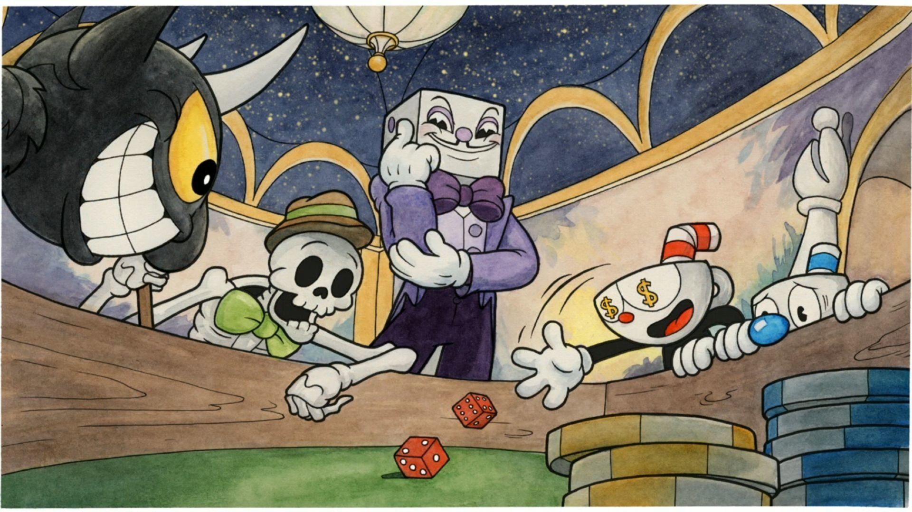

Cuphead
O jogo mágico saído dos desenhos animados!
Cuphead é um clássico jogo de ação de corridas e armas altamente focalizado em batalhas de chefes. Foi inspirado nos desenhos da década de 1930; os visuais e o áudio foram minuciosamente criados com as mesmas técnicas da era, ou seja, aquarelas e animações tradicionais desenhadas à mão e gravações de jazz originais.
Jogue como Cuphead ou Mugman (um único jogador ou cooperativa local) enquanto você percorre mundos estranhos, adquire novas armas, aprende poderosos super movimentos e descobre segredos enquanto tenta pagar sua dívida com o diabo!
Um trabalho para o diabo
O jogo começa como se fosse um livro. Cuphead e Mugman são dois irmãos travessos que moram em Inkwell Island e adoram uma aventura. Um dia, brincando longe de casa, decidem ir ao Cassino do Diabo (Devil’s Casino) mesmo contra as indicações de Elder Kettle, Chaleira Anciã, responsável pelos dois. Lá, eles ficam encantados com a jogatina e começam a ganhar desenfreadamente, chamando a atenção do Senhor Rei Dado (Mr. King Dice), gerente da casa de jogos.
Os dois meninos se sentiam invencíveis até que o Diabo, dono do local, chegou e propôs aumentar as apostas: os dois poderiam ganhar todo o dinheiro da locação se ganhassem, porém, caso perdessem, eles lhe entregariam a alma. Cuphead aceita, mesmo após o irmão não parecer tão certo.
Como já imaginado, os meninos jogam os dados e perdem, começando a implorar por suas vidas e dizendo que deveria haver outro jeito. O Diabo, então, diz que se Cuphead e Mugman conseguissem coletar todas as almas de uma lista de devedores, ele perdoaria os dois. Eles teriam até a meia-noite do dia seguinte para conseguir todas as almas.
Ambos correm para a casa da Chaleira em busca de um conselho. O senhor concede aos garotos o dom de atirar pelos dedos e, entrega, em seguida, o tutorial do jogo. Após aprender todos os controles, você pode sair pelo mapa para explorar e começar a coletar almas para o Diabo.
De volta aos anos 30
O visual do jogo é baseado em jogos de 8 e 16 bits, além de, claro, cartoons dos anos 1930 - mais especificamente aqueles produzidos por Max Fleischer, tal como Betty Boop e Popeye.
Os desenhos de Fleischer eram caracterizados pelo estilo “rubber hose”, no qual os personagens não têm juntas ósseas, e pelo uso do rotoscópio, um método de animação em que se usa um referencial de uma cena para desenhar a cena seguinte – o que normalmente gera um constante movimento das linhas dos contornos do desenho final.
A preocupação da arte do game é tal que tanto o cenário como os personagens são desenhados à mão. Também não se pode deixar de falar da trilha sonora original regada à jazz. De acordo com a produtora, existe uma gravação de duas horas e meia de músicas escritas exclusivamente para o jogo.
Diversão mais estilosa o possível!
Os comandos são bem simples e não diferem muito do que é visto por aí. Como na maioria dos títulos atuais, você também pode comprar “upgrades” (ou aperfeiçoamentos) de suas armas ou técnicas na loja do game – por sinal, o dono do estabelecimento é um porquinho, ao mesmo tempo, fofo e mal-encarado, que fica olhando para o relógio quando o cliente demora e não compra nada.
Realmente, quando um boss ou uma fase (a maioria, devo acrescentar, é BEM difícil) é finalizado/a, você se sente o melhor jogador do mundo. É como se você tivesse superado um obstáculo e toda sua frustração em não acertar aquele pulo ou tiro é recompensada.
O foco do game é o multiplayer local. Existem boatos de que o co-op será expandido para o online, porém, nada foi confirmado ainda. Em teoria, Cuphead e Mugman estão envolvidos no acordo com o Diabo e precisam vencer todos os chefões se quiserem se salvar.
Screenshots de Cuphead

Cuphead já está disponível para Nintendo Switch.